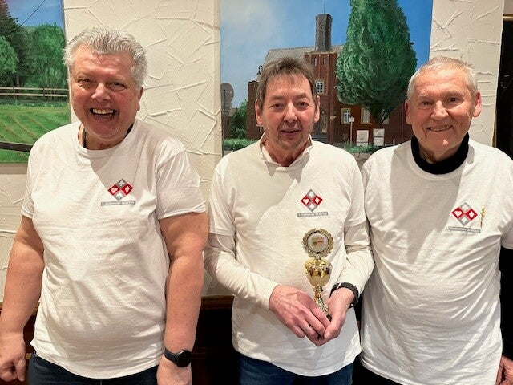
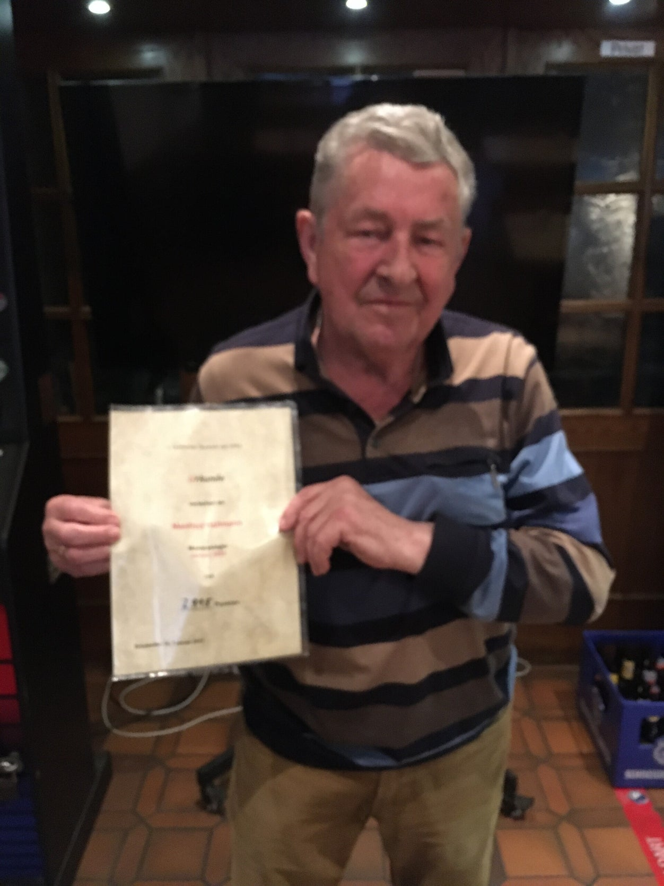
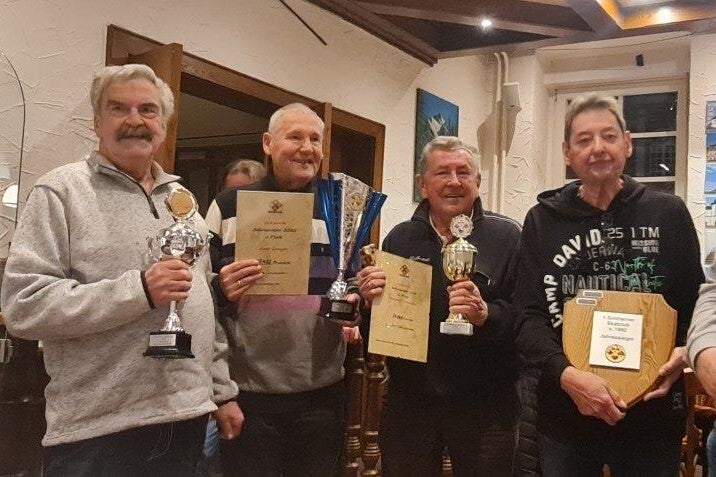

Gewinner Frühjahrs-Preisskat 2026 vordere Reihe von links Platz 2 Klaus Heimann, Platz 1 Kai Faßbender, Platz 3 Kurt Langer, hintere Reihe Platz 5 Frank Bertram, Platz 6 Michael Hetz, Platz 4 Norbert Josek,
Gewinner Frühjahrs-Preisskat 2026 vordere Reihe von links Platz 2 Klaus Heimann, Platz 1 Kai Faßbender, Platz 3 Kurt Langer, hintere Reihe Platz 5 Frank Bertram, Platz 6 Michael Hetz, Platz 4 Norbert Josek,

Max Kraus neues Mitglied seit 10.02.2026
Martin Mauelshagen Mitglied seit 01.03.2026
Jo Brand neues Mitglied seit 10.03.2026
Norbert Josek neues Mitglied seit 24.02.2026
Clubmeisterschaft 2025
Platz 1 Kurt Langer 31357 Pkt
Platz 2 Frank Bertram 29549 Pkt.
Platz 3 Michael Hetz 28799 Pkt.
Monatssieger November 2025 Joachim Jeske
Weihnachtspreisskat 2025
Platz 1 Achim Stümpges
Platz 2 Bernhard Selzer
Platz 3 Kurt Langer
Monatssieger Oktober 2025 Frank Bertram
Alexander Grapatin neues Mitglied
seit 01.11.25
Gewinner Herbst-Preisskat 2025
von links Kurt Langer 4. Platz, Bernhard Selzer 2. Platz, Wilfried Puls 1. Platz, Ralf Pestotnik 3. Platz, Michael Hetz 5. Platz
Monatssieger September 2025 Wilfried Puls


Monatssieger August 2025 Frank Bertram
Monatssieger Juli 2025 Joachim Jeske
Gewinner Sommerpreisskat 2025
Klaus Heimann, Kurt Langer, Peter Schwarz
Michael Hetz und Bodo Holtkamp
Alfred Gruschka
neues Mitglied seit 29.07.2025
Monatssieger Mai 2025 Dieter Schnecke
Monatssieger Juni 2025 KLaus Heimann
Gewinner Frühjahrspreisskat 2025
Plat 1 Wilfried Puls, Platz 2 Ralf Pestotnik, Platz 3 Kurt Langer, Platz 4 Michael Hetz, Platz 5 Bernhard Selzer
Frank Bertram qualifiziert für die Endrunde zur DEM 2025 in Hannover
Monatssieger April 2025
Kurt Langer
Monatssieger März 2025
Kurt Langer
Monatssieger Februar 2025
Kurt Langer
Monatssieger Januar 2025
Heinz Bühl
Harry Gebhardt neues Mitglied seit 01.01.2025
Qualifizierten für die Zw-Runde Vorständeturnier und DEM
Pressemitteilung siehe Verb.-Spielbetrieb
Dank vom Vorsitzenden
Dieter Schnecke an seinen Stellvertreter Ralf Pestotnik für die geleistete Arbeit 2024
Dank vom Vorsitzenden
Dieter Schnecke an den Spielleiter Achim Stümpges für die geleistete Arbeit 2024
Dank vom Vorsitzenden
Dieter Schnecke an den Pressewart Kurt Langer für die geleistete Arbeit 2024

Monatssieger November 2024
Heinz Grünenwald
plötzlich unerwartet verstorben.
Der Club wird den außergewöhnlichen Skatspieler immer in guter Erinnerung als erfolgreichen und liebenswerten Skatspieler behalten.
Ehrung von Joachim Jeske für 20 jährige Mitgliedschaft
Monatssieger Oktober 2024 Frank Kühn
Monatssieger August 2024 Achim Stümpges
Monatssieger September 2024 Kurt Langer
Monatssieger Juni 2024 Kai Faßbender
Monatssieger Juli 2024 Peter Schwarz
Monatssieger Mai 2024 Klaus Heimann
Teilnahme an der Endrunde
zur Dt. Einzelmeisterschaft
Kurt Langer vom 1.Si.Skatclub
Monatssieger März 2024 Norbert Götte
Monatssieger April 2024 Michael Hetz
Bertram Frank neues Mitglied seit 12.03.2024
Kai Fassbender neues Mitglied seit 01.03.2024
Ehrung zum 90. Geburtstag von Joachim Jeske
90. Geburtstag von Joachim Jeske
Monatssieger Januar 2024 Heinz Bühl
Monatssieger Februar 2024 Heinz Bühl
Dieter Schnecke, Achim Stümpges und Kurt Langer qualifiziert für die Zwischenrunde zur Deutschen Skat-Einzelmeisterschaft der Senioren.

Vorstand des 1. Sintherner Skatclub v. li. Dieter Schnecke, Ralf Pestotnik, Kurt Langer und Achim Stümpges
Gewinner Sonder-Preisskat 09.01.2024
1. Wilfried Puls, 2. Kurt Langer, 3. Dieter Schnecke
Klaus-Dieter Heimann
Mitglied seit 01.01.2024
Vorstände-Turnier 2024 der VG 50
2. Platz Kurt Langer mit 3707 Pkt. qualifiziert für die Zwischen-Runde in Wachtberg
Pressebericht Pulheimer Wochenende Siegerehrung der Clubmeister 2023

Clubmeister 2023 Kurt Langer, Manfred Hallmann und Heinz Grünenwald
Clubmeister 2023 Kurt Langer,
M. Hallmann und H. Grünenwald
Pokalgewinner Online-Skat Werner Schäfer
Siegerehrung Onlie-Skat 2023 Werner Schäfer
Monatssieger November 2023 Kurt Langer
Mitglieder des 1. Sintherner Skatclubs 1992


Monatssieger Oktober 2023 Peter Schwarz
Hetz Michael neues Mitglied seit 23.10.2023
Ehrung von Kurt Langer für 30 Jahre Mitgliedschaft
durch den 1. Vorsitzenden Dieter Schnecke
Monatssieger September 2023 Joachim Jeske
Gewinner Herbst-Preisskat 2023
Platz 1 Frank Kühn, Platz 2 Wilfried Puls , Platz 3 Joachim Jeske, Platz 4 Ralf Pestotnik
Monatssieger Juli 2023 Heinz Grünenwald
Monatssieger Juni 2023 Norbert Götte
Monatssieger Mai 2023 Kurt Langer

Monatssieger April 2023 Manfred Hallmann

Monatssieger März 2023 Kurt Langer
Gewinner Frühjahrs-Preisskat 2023
Platz 1 Kurt Langer, Platz 2 Heinz Grünenwald
Platz 3 Dieter Schnecke, Platz 4 Peter Schwarz
Monatssieger Januar 2023
Manfred Hallmann

Vorrunde DEM 12. Februar 2023 in Düren; Kurt Langer erhält einen Pokal für den den 3.Platz bei den Senioren und ist für die Zwischen-Runde in Düren qualifiziert.

Monatssieger Februar 2023
Kurt Langer

Clubmeister 2022 Kurt Langer, Heinz Grünenwald und Manfred Hallmann.
Siegerehrung durch den Vorsitzenden Dieter Schnecke und Spielleiter Achim Stümpges

Urkunde Kurt Langer 25 Jahre Mitglied DSKV

Clubmeister 2021 Manfred Hallmann, Heinz Grünenwald und Klaus Reinegger
Clubmeister 2018
Michael Buscher, Kurt Langer und Manfred Hallmann
Clubmeister 2019
Michael Buscher, Herbert Kreber und Kurt Langer
2020 wurde wegen der Corona Pandemie keine Club-
Meisterschaft gespielt.
Clubmeister 2017
Herbert Kreber, Kurt Langer und Michael Buscher
Dank an Kurt für 25 jährige
Vorstandsarbeit überreicht am 12.09.2017
Gewinner Herbst-Preisskat 2017 Herbert Kreber, Kurt Langer, Reiner Ubber, und Manfred Hallmann

Urkunde vom DSKV für
25 jährige Vorstandsarbeit
Clubmeisterfoto 2015
Kurt Langer
Gewinner Herbst-Preisskat 2014
Herbert Kreber,
Kurt Langer, Renate Gärtlein und Peter Meiß

Gewinner Sommer-Preisskat 2014 Michael Buscher, Helmut Weyers, Peter Meiß und Kurt Langer

Endrunde DEM 2013 in Ulm
Kurt Langer und Klaus Reinegger
Gewinner Herbstpreisskat 2013 Willi Zollner, Kurt Langer
Renate Gärtlein und Jürgen Odenthal

DEM 2012 VG 50
Vizemeister K Langer
Clubmeister 2012 Kurt Langer,
Ulrich Albanus und Joachim Jeske
Endrunde DEM 2012 in Ulm
Kurt Langer
Sintherner Skatclub und weitere VG 50 Mitglieder
Endrunde DEM 2011
Kurt Langer, Annissa Feiler und weitere VG 50 Mitglieder
Clubmeister 2009
Kurt Langer, Lothar Schleucher und Ingo Dietze

Clubmeister 2006
Ingo Dietze, Manfred Hallmann und Kurt Langer
Clubmeister 2003
Kurt Langer, Peter Seidel
und Helmut Neumann
Clubmeister 1998
Kurt Langer, Cilla Anhut
und Manfred Hallmann
Clubmeister 1995
Kurt Langer, Johann Porschen und Christian Köllgen
Clubmeister im Gründungsjahr 1992
Johann Porschen, Kurt Langer
und Dieter Dauendorffer
Gewinner SPD Preisskat Kurt Langer
Gewinner Wanderpokal
Kurt Langer als Monatssieger
Gewinner Wanderpokal
Karl-Heinz Kohl
Gewinner Wanderpokal
Kurt Langer als Monatssieger
Ligamannschaft
Klaus Reinegger, Michael Buscher, Ulrich Albanus,
Herbert Kreber und Kurt Langer

Gewinner Skatturnier
Peter Meis, Patricia Suhr, Joachim Jeske, Jürgen Odenthal und Klaus Rabe
Kurt Langer Wanderpokalgewinner
als Monatssieger
Mitglieder 1. Sintherner Skatclub
Clubmeister 2016
Herbert Kreber, Kurt Langer und Michael Buscher
Clubmeisterfoto 2015
Kurt Langer u Ulrich Albanus
Gewinner Wanderpokal
Kurt Langer
Kurt Langer und Klaus Reinegger für die Endrunde DEM 2013 qualifiziert

Klassenerhalt in der Oberliga 2013
Gewinner Herbstpreisskat 2013 Willi Zollner, Kurt Langer, Renate Gärtlein und
Jürgen Odenthal
Zwischenrunde DEM 2012 in Werdohl Peter Seidel, Lothar Schleucher, Kurt Langer, Klaus Reinegger und Ulrich Albanus
Endrunde DEM 2011 in Ulm
Kurt Langer
Clubmeister 2010 Klaus Reinegger,
Kurt Langer und Peter Seidel
Clubmeister 2007
Kurt Langer, Peter Seidel
und Johann Porschen
Clubmeister 2004
Peter Seidel, Kurt Langer
und Ingo Dietze
Clubmeister 2001
Cilla Anhut, Alfred Hahn
und Ingo Dietze
Clubmeister 2000
Patric Levy, Joachim Sorgatz und Alfred Hahn
Urkunde Grand Ouvert 18.08.1998
Clubmeister 1996
Kurt Langer, Erich Dickers und Erich Leschitzki
Clubmeister 1993
Erich Leschitzki, Kurt Langer und Willi Kievernagel
Gewinner Wanderpokal
Kurt Langer
Gewinner Wanderpokal
Kurt Langer

Gewinner Wanderpokal
Kurt Langer
als Monatssieger
Gewinner Wanderpokal
Kurt Langer als Monatssieger
Skatfreunde Worringer Junge mit Skatfreunden 1.Sintherner Skatclub
Wanderpokalgewinner März 2017, Michael Buscher
Kurt Langer Gewinner Wanderpokal als Monatssieger
VG 50 Sieger Helmut Weyers

Gewinner Sommer-Preisskat 2016 Kurt Langer, Bodo Holtkamp und Herbert Kreber
Clubmeisterfoto 2015
Ulrich Albanus 2015
Gewinner Clubmeisterschaft 2015
Ulrich Albanus, Kurt Langer
und Michael Buscher
VG 50 Sieger DEM 2014 Kurt Langer
Endrunde DEM 2013 in Ulm
Kurt Langer Klaus Reinegger und weitere Skatfreunde der VG 50
Skatturnier Sintherner Skatclub 2013
Clubmeister 2013
Kurt Langer, Peter Seidel
und Willi Zollner

Endrunde DEM 2012 in Ulm
Kurt Langer u.a.
Endrunde DEM 2012 in Ulm
Ulmer Münster
Weihnachtsfeier und
1.Sintherner Skatclub
Dezember 2011
Clubmeister 2011
Kurt Langer, Ingo Dietze
und Joachim Jeske
Clubmeister 2005
Kurt Langer, Michael Buscher und Peter Seidel
Clubmeister 2002
Ingo Dietze, Kurt Langer und Helmut Neumann
Clubmeister 1999
Jochen Sorgatz, Christian Köllgen und Peter Seidel
Clubmeister 1997
Paul Porzelt, Jochen Sorgatz und Kurt Langer
Clubmeister 1994
Jochen Sorgatz, Kurt Langer und Alfred Hahn
Gewinner Wanderpokal Kurt Langer

Gewinner Wanderpokal
Kurt Langer
Gewinner Wanderpokal
Heinz Haferung
Gewinner Wanderpokal
Michael Buscher
Gewinner Skatturnier
Karl-Heinz Kohl, Helmut Weyers, Jürgen Odenthal,
und Kurt Langer
90. Geburtstag von Cilla Anhut
Gewinner Jubiläums-Preisskat 2012 Helmut Weyers, Heinz Füsser,
Ulrich Albanus, Kurt Langer,
Käthe Wilske und Heinz Haferung
Kurt Langer Zw-Runde DEM in Spay